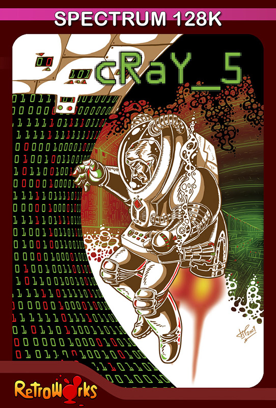
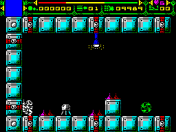

Cray_5


{kind=link}

| Created by: | Benway, Francisco Javier Velasco, Iggy Rock, WYZ |
| Price: | Free |
| Year: | 2010 |
Pollution and its consequences make life on Earth impossible in a few years. It is then when governments come together to finance a plan to colonize outer space.

In this program of exterior colonization, a huge spaceship was created, a true continent that will transport different ecosystems, and some 5,000 brave humans, traveling through space until they find a new planet that is suitable to host terrestrial life.
Since Man has shown that he is not capable of taking care of himself, the control of the colony is under the command of a super computer, called Cray-5, which monitors that all the parameters are adequate so that all the species that travel within it can live safely throughout the journey, the final duration of which is unknown.
As lead designer of the Cray-5 processor, you didn't hesitate to volunteer to ride the ship, although the perfection of the processor makes it impossible to break down, you are fascinated by the mission objective.